\[ \newcommand{\expr}[3]{\begin{array}{c} #1 \\ \bbox[lightblue,5px]{#2} \end{array} ⊢ #3} \newcommand{\ct}[1]{\bbox[font-size: 0.8em]{\mathsf{#1}}} \newcommand{\updct}[1]{\ct{upd\_#1}} \newcommand{\abbr}[1]{\bbox[transform: scale(0.95)]{\mathtt{#1}}} \newcommand{\pure}[1]{\bbox[border: 1px solid orange]{\bbox[border: 4px solid transparent]{#1}}} \newcommand{\return}[1]{\bbox[border: 1px solid black]{\bbox[border: 4px solid transparent]{#1}}} \def\P{\mathtt{P}} \def\Q{\mathtt{Q}} \def\True{\ct{T}} \def\False{\ct{F}} \def\ite{\ct{if\_then\_else}} \def\Do{\abbr{do}} \]
Thanks in advance to Yifan for making many of the following plots/figures.
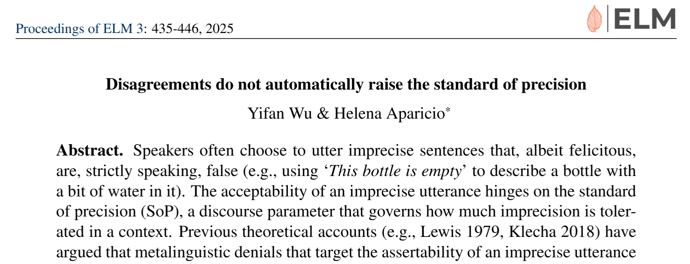
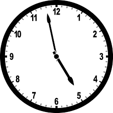
True or false?
Lasersohn proposes to understand imprecision in terms of a pragmatic halo (Lasersohn (1999)).
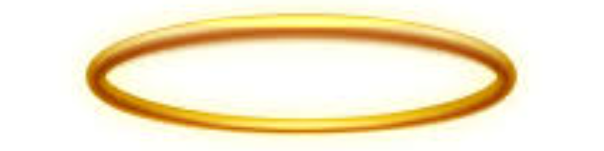
Slack regulators shrink or widen the halo.
Widening: Wow, it’s already about five!
Shrinking: Wow, it’s already exactly five!
Shrinking: The theater is completely empty.
The standard of precision (SOP) can change (Lewis (1979)).
Jo: It’s already five.
Bo: No, it’s 4:58!
Jo: The theater is empty.
Bo: No, someone’s sitting in the corner!
Jo: Okay, I’m dry.
Bo: No, you have a few drops on your arm.
Compare:
Jo: It’s already five. Bo: No, it’s 4:58!
Jo: # Okay, but it’s still five!
Jo: The theater is empty. Bo: No, someone’s in the corner.
Jo: # Sure, but it’s empty.
Jo: Okay, I’m dry. Bo: No, you have a few drops on your arm.
Bo: # Sure, but I’m dry.
↝ Only possible to shrink the pragmatic halo?
Wu and Aparicio collect judgments about the application of adjectives like empty.
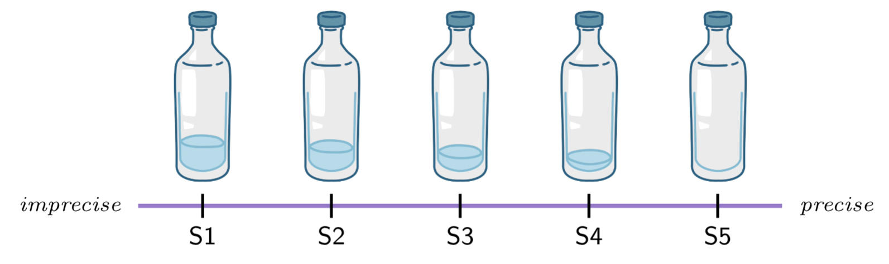
(They look at S1, S4, and S5.)
Experimental participants were told that they’d interact with someone (in reality, a bot). The bot might disagree with them.
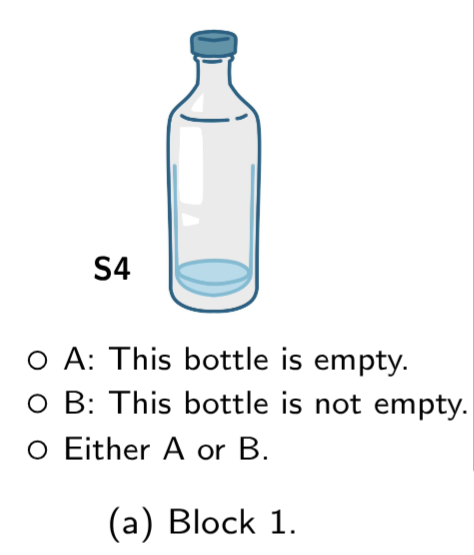
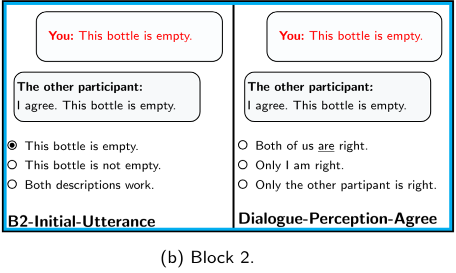
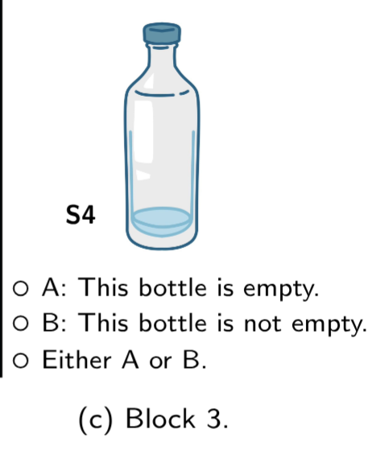
You could be paired with either an imprecise bot (Experiment 1) or a precise bot (Experiment 2).
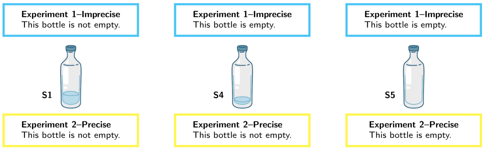
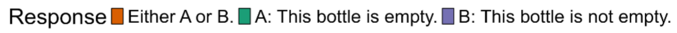
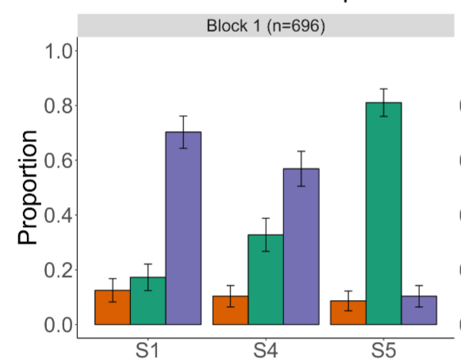
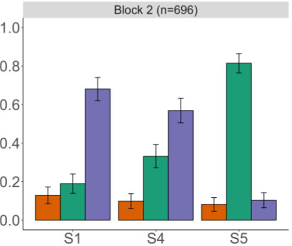
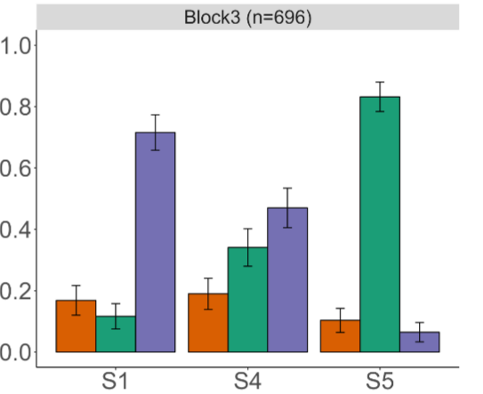
Disagreement seems to lower the standard (a little)!
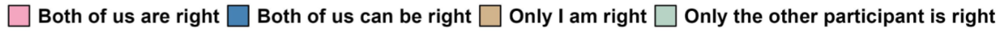
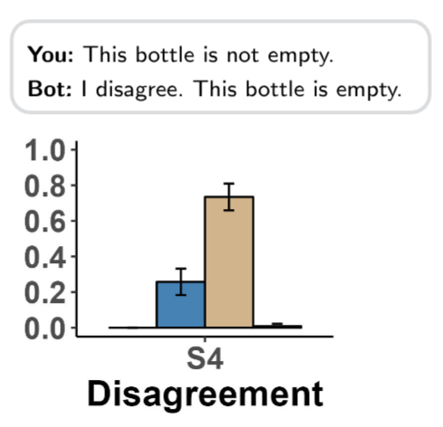
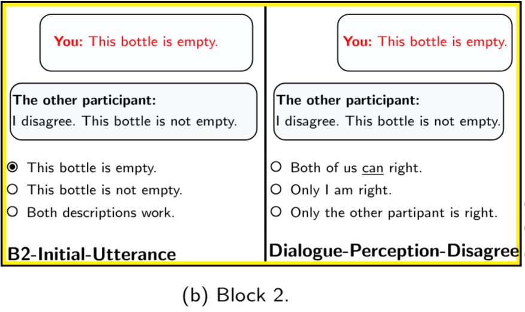
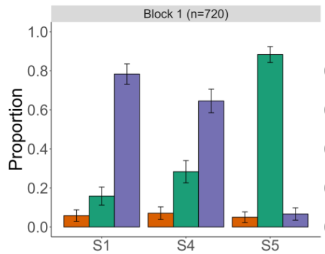
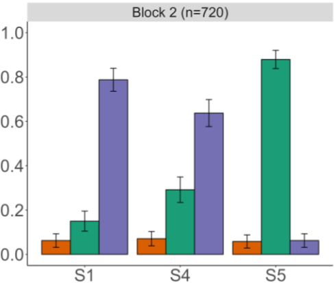
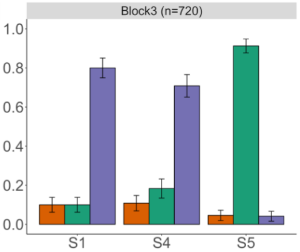
Disagreement seems to raise the standard.
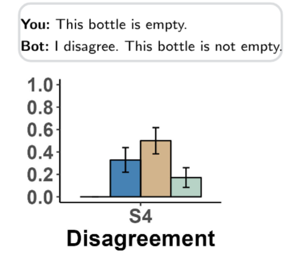
Hypothesis: biased bidirectionality arises from our probabilistic knowledge about pragmatic halos.
This difference is reflected in scale structure.
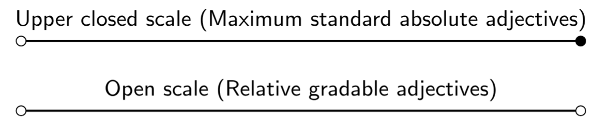
Absolute model: there is an upper endpoint on the scale, and we model the SOP as departing from this endpoint.
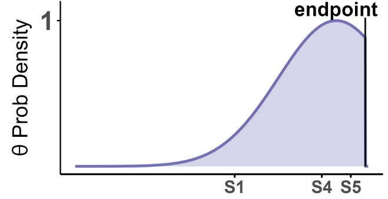
Relative model: there is no upper endpoint - the adjectival standard is vague.
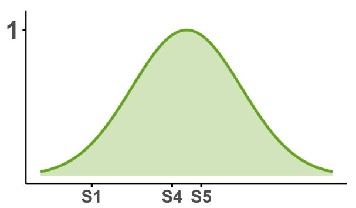
Expected log pointwise predictive density (ELPD).
ELPD difference (s.e. of the difference):
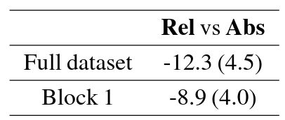
We have some preliminary evidence that the apparent unidirectionality of precisification arises from:
Ongoing:
Questions? Discussion?
Adjectival scale structure and the discourse dynamics of imprecision